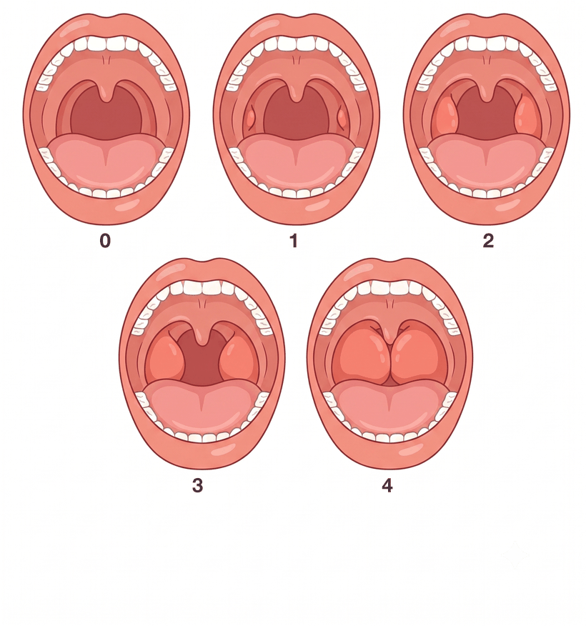
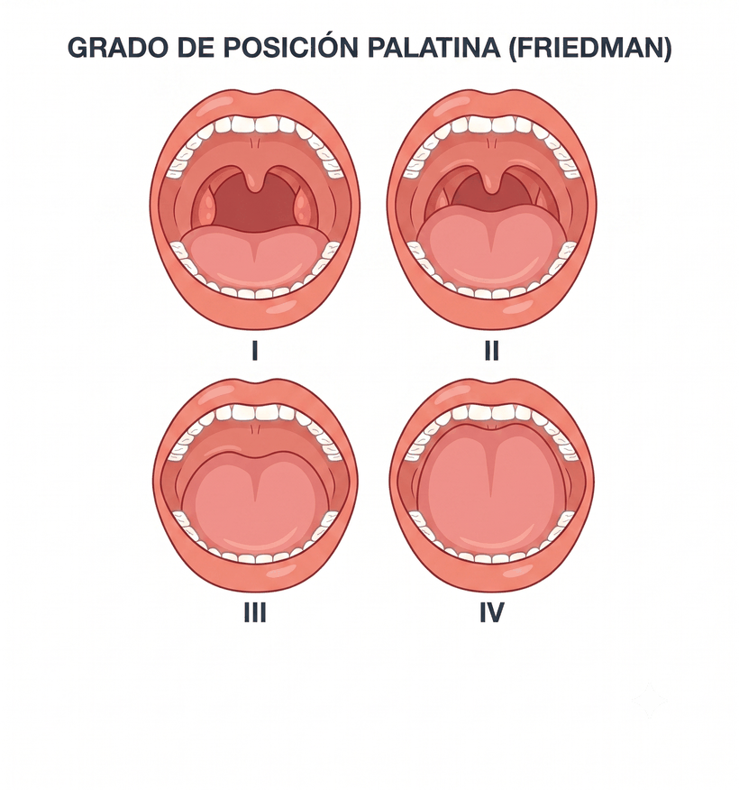
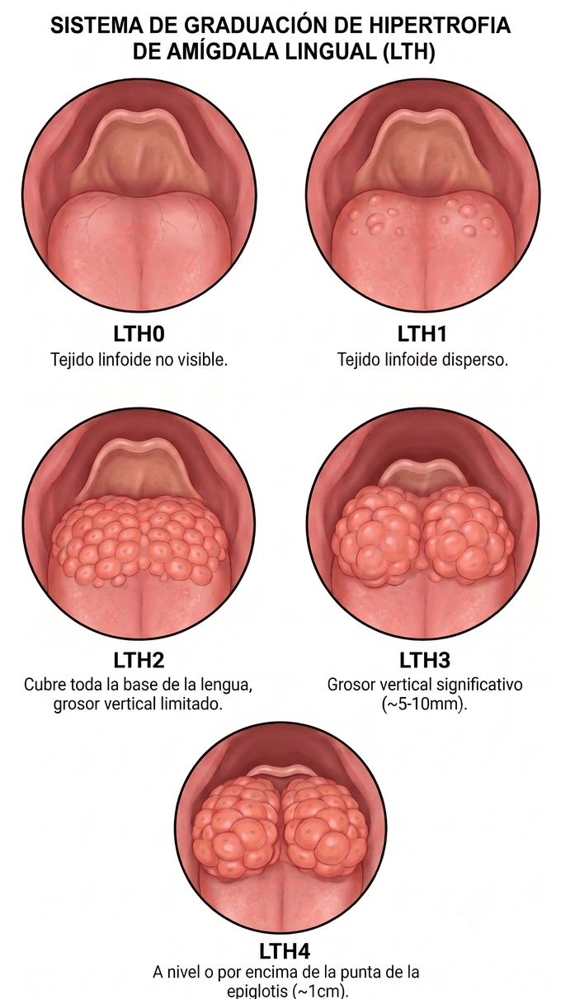

Sueño · Antropometría
IMC, estadio de Friedman y perímetro cervical
Introduce los datos y el resultado se calcula al momento en tu propio equipo. Al terminar puedes generar un informe imprimible o en PDF.
Antropometría
Índice de masa corporal, clasificación OMS y peso saludable.
kg
cm
cm
IMC
—
Clasificación OMS
—
Peso ideal (IMC 22)
—
Peso saludable (IMC 18,5–24,9)
—
Estadio de Friedman
Combina la posición palatina, el tamaño amigdalar y el IMC.
Tamaño amigdalar (amígdala palatina)
Graduación 0–4.
Ver ilustración de referencia

Posición palatina (Friedman)
Graduación I–IV. Para el estadio, I–II cuentan como posición baja y III–IV como alta.
Ver ilustración de referencia

Estadio de Friedman
—
Hipertrofia de amígdala lingual
No forma parte del estadio de Friedman; se registra como dato exploratorio (LTH 0–4).
Ver ilustración de referencia
